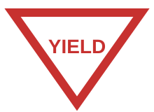
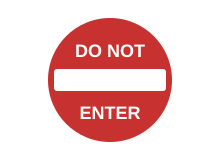
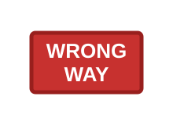
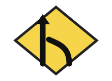
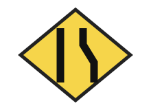

Find the sign distinction you miss, then prove it.
This short contrast lab uses six signs already in the picture bank. You will compare easily-confused meanings, practice the driver action, and answer a new wording before recording this session as evidence.
Unofficial study aid. The sign meanings are based on the existing bank and the FHWA MUTCD; the wording was checked against Pennsylvania Driver’s Manual, Chapter 2: Signs (regulatory and warning signs). Use your own state driver handbook for current rules and test format. This page does not predict a pass result or certify mastery.
Phase 1 of 3 · Diagnose0 of 3 contrasts
Contrast lab · incremental addition
Which sign distinction needs work?
Choose the answer that best describes the sign pair. A miss opens targeted practice; every distinction then gets another practice question before the next pair.
Your answers stay on this device. “Evidence” here means this session’s responses, not official mastery.
Your local review sheet
Distinctions to revisit
This list records only this session. It does not claim that you have or have not mastered an official exam topic.
Three distinctions, with the reason behind the action
Stop vs. Yield: an empty road does not make the signs interchangeable
vs.

Imagine two quiet approaches to an intersection. One has a STOP sign; the other has a YIELD sign. You cannot see another vehicle yet. The important difference is the control at your approach, not your first impression that the road is empty.
The distinction
The red octagon requires a complete stop. The downward triangle requires giving way: slow, look for road users with priority, and stop when necessary.
The decision
At STOP, finish the stop before deciding whether the gap is safe. At YIELD, do not assume that slowing has given you priority. Check for pedestrians and conflicting traffic before proceeding.
A tempting mistake
If the junction looks clear, I can roll through either sign.
Why that reasoning fails
An apparently empty junction does not cancel a STOP requirement. It also does not prove a YIELD entrance is clear: a pedestrian or a vehicle outside your first glance can still have priority. Neither sign grants permission to enter an unsafe gap.
Explain a changed situation
Now a pedestrian appears as you approach the YIELD sign. Explain why stopping can be necessary even though YIELD does not require a fixed stop on every approach.
The decision changes with the conflict. You must give the pedestrian the right of way, which can require a stop. Do not memorize a number of seconds or the shortcut 'yield means never stop'.
Do Not Enter vs. Wrong Way: prevent the entry, then recognize a direction error

vs.

You are looking for an entrance. At the mouth of one roadway you see DO NOT ENTER. Farther along a one-way roadway or ramp, a WRONG WAY sign can warn someone who has already entered in the wrong direction. This is a teaching sequence, not a placement plan.
The distinction
DO NOT ENTER controls entry from your direction. WRONG WAY warns that your direction of travel is wrong. Both relate to avoiding opposing traffic; neither is a general parking or speed sign.
The decision
Do not enter past the first sign while searching for confirmation. If you encounter WRONG WAY after a turn, do not continue against traffic; correct the situation only in a safe, legal way. A practice illustration cannot select that maneuver for a real roadway.
A tempting mistake
I can continue until I see WRONG WAY, or make an immediate U-turn wherever that sign appears.
Why that reasoning fails
Waiting for the second warning defeats the entry restriction. An abrupt reversal can create another conflict or be illegal at that location. Recognize the direction problem without turning the lesson into a blanket instruction to perform a particular maneuver.
Explain a changed situation
Suppose the DO NOT ENTER picture is partly obscured but you can recognize its red circle and white horizontal bar. Explain why a missing second warning would not make that entry permitted.
The entry control stands on its own. WRONG WAY is another warning, not a condition that must be met before DO NOT ENTER applies. Always use the actual roadway controls and the official handbook for real driving decisions.
Merge vs. Lane Ends: joining traffic is not the same as losing a lane

vs.

Compare an entrance ramp joining a roadway with a two-lane section that narrows to one lane. Both situations need observation and space management. Only the second tells you that an existing travel lane ends ahead.
The distinction
A merge warning draws attention to joining traffic. A lane-ends warning draws attention to a lane reduction. Read the actual diagram and road markings to determine which side is affected; the simplified picture here is not a rule that the same side always ends.
The decision
Look ahead and manage speed and space for the actual conflict. Do not assume the adjacent driver will stop for you. Follow the posted controls, markings and applicable local merging rules rather than memorizing one universal merge point.
A tempting mistake
Both yellow signs mean my lane ends, so I must immediately move sideways.
Why that reasoning fails
The color identifies a warning, not the exact geometry. Joining traffic can require attention without removing your lane. A lane reduction requires preparing for the indicated change, not a sudden move without checking whether there is a safe gap.
Explain a changed situation
Imagine the sign is before a ramp, but the entering traffic gets its own added lane. What extra information would you need before calling it a merge conflict?
Check the sign's specific symbol, the lane markings and the roadway ahead. A nearby ramp alone does not prove that two streams must immediately share one lane. Compare the official manual's Added Lane example with its Merging Traffic and Lane Ends examples.
Checked the consistency of the 31 shared illustrations and labels, the eight classroom illustrations and answer-key mapping, and the three linked contrast lessons. Simplified pictures teach recognition, not sign manufacturing specifications or every state's traffic law.
The classroom school sign now uses the shared five-sided artwork. Do Not Enter lettering stays on its red background; the Keep Right arrow no longer crosses its lettering. Lane Ends retains two lane-boundary strokes without a merge arrow, and Slippery When Wet retains a vehicle and two skid tracks. The classroom pack and web reference now use the same exported sign pictures.
TestDayTools: AI-assisted drafting, illustration maintenance and comparison with the official sources below. This is not a driving-instructor assessment or a study of learning outcomes.